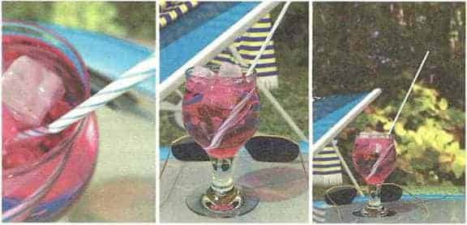

"Korkarım bir kutu içine almak onu birleşik kuram haline getirmez."
Çünkü boş uzay demek, bir alanın hem değerinin hem de değişim oranının tam olarak sıfır olması demektir. (Eğer alanın değişim oranı sıfır değilse uzay boş olarak kalmayacaktır.) Belirsizlik ilkesi hem alanın hem de değişim oranının kesin olmasına izin vermediği için uzay asla boş değildir. Uzay minimum enerji durumunda olabilir ve bu duruma vakum denir; bu bir kuantum gecikmesi veya vakum dalgalanmasıdır - parçacıklar ve alanlar titreşerek var olur ve yok olurlar.
Vakum dalgalanmaları bir çift parçacığın bir zamanda birlikte ortaya çıkmaları, ayrılmaları ve sonra yeniden bir araya gelerek birbirlerini yok etmeleri olarak düşünülebilir. Feynman diyagramları açısından bu durum kapalı döngülere denk düşer. Bu parçacıklara sanal parçacıklar denir. Gerçek parçacıkların tersine sanal parçacıklar parçacık dedektörü ile gözlenemez. Ancak dolaylı etkileri, örneğin elektron yörüngelerindeki küçük enerji değişimleri ölçülebilir ve kuramsal öngörülerle dikkat çekecek doğrulukta örtüşür. Sorun şu ki, sanal parçacıkların enerjileri vardır ve sonsuz sayıda sanal parçacık olduğu için enerjileri de sonsuz miktarda olacaktır. Genel görelilik kuramına göre bu, sanal parçacıkların evreni sonsuz küçüklükte bir ölçeğe kadar bükebilecekleri anlamına gelir, ancak bunun gerçekleşmediği ortadadır!
Bu sonsuzluklar sorunu güçlü, zayıf ve elektromanyetik güçlerde ortaya çıkan soruna benzemekte, ama bu kuvvetlerde renor- malizasyon sonsuzlukları ortadan kaldırıyor. Ancak Feynman’ın çekim kuvvetini gösteren diyagramlarındaki kapalı döngünün yarattığı sonsuzluklar renormalizasyon ile soğrulamıyor, çünkü genel görelilikte bütün sonsuzlukları kuramdan çıkarmaya yetecek kadar renormalize edilebilir veri (kütle ve yük değerleri gibi) yok. Böylece geriye, uzay-zamanın eğikliği gibi belirli niceliklerin sonsuz olduğunu öngören, bu nedenle içinde yaşanabilir bir evreni yönetmesi mümkün olmayan bir kütleçekim kuramı kalıyor. Yani anlamlı bir kuram yaratmayı başarmak için, sonsuzlukları renormalizasyona başvurmadan ortadan kaldırmamız gerekiyor.
1976’da bu soruna çare olabilecek bir çözüm bulundu. Buna süperçekim dendi. “Süper” öneki, fizikçiler bunun süper olduğunu, bu kuantum çekim kuramının gerçekten işe yarayacağını düşündükleri için eklenmedi. Tersine “süper” önceki kuramda yer alan ve süpersimetri denilen bir tür simetriyi ima ediyor.
Bir sistemin özellikleri belirli dönüşümlerde, örneğin onu uzayda döndür düğümüzde veya ikiz görüntüsünü aldığımızda değişmiyorsa bu sistemin simetriye sahip olduğunu söyleriz. Örneğin bir kek dilimini olduğu yerde döndürürseniz tam olarak aynı görünecektir (Elbette üzerinde çikolata sosunun olmadığını düşünürsek. Aksi takdirde, siz iyisi mi keki sadece yiyin). Süpersimetri, sıradan uzayın dönüştürülmesiyle ilişkilendirilemeyecek kadar incelikli bir simetri türüdür. Süpersimetrinin en önemli sonuçlarından birine göre, kuvvet parçacıkları ile madde parçacıkları, dolayısıyla kuvvet ve madde, yalnızca aynı şeyin iki görünümünden ibarettir. Daha açık söylemek gerekirse, kuark gibi her bir madde parçacığı bir kuvvet parçacığı eşe ve foton gibi her bir kuvvet parçacığı da bir madde parçacığı eşe sahiptir. Bu durum sonsuzluklar sorununu çözme kapasitesine sahiptir, çünkü kuvvet parçacıklarının kapalı döngülerinin oluşturduğu sonsuzlukların pozitif, madde parçacıklarının kapalı döngülerinin oluşturduğu sonsuzlukların ise negatif olduğu anlaşılmıştır; böylece kuramdaki kuvvet parçacıklarından ve onların madde parçacığı olan eşlerinden kaynaklanan sonsuzluklar birbirlerini götürme eğilimindedir. Ne yazık ki süperçekimde iptal edilmemiş sonsuzluklar kalıp kalmadığını anlamak için yapılması gereken hesaplamalar o kadar uzun, zor ve hata yapma olasılığı o kadar yüksek ki, kimse bunu üzerine almaya hazır değildi. Bununla birlikte fizikçiler çoğunlukla süperçekimin çekim kuvvetini diğer kuvvetlerle birleştirme sorununa en iyi yanıt olduğuna inandılar.
Süpersimetrinin geçerli olup olmadığını kolaylıkla inceleyebileceğimizi düşünebilirsiniz - yalnızca var olan parçacıkların özelliklerine ve çift olup olmadıklarına bakmak yeterli olacaktır. Ancak gözlemlenmiş olan böyle eş parçacıklar yoktur. Fizikçilerin yaptığı değişik hesaplamalar, gözlemlediğimiz parçacıklara denk gelen eş parçacıkların bir protonun bin katı kadar hatta daha ağır bir kütleye sahip olmaları gerektiğini gösteriyor. Şimdiye kadar yapılan deneylerde görülmüş olan parçacıklardan fazlasıyla ağır oldukları anlaşılıyor; ancak Cenevre’deki Büyük Hadron Çarpıştırıcısı’nda bir gün nihayet bu parçacıkların ortaya çıkacağını umuyoruz.
Süpersimetri düşüncesi, süperçekimin yaratılmasında temel oluşturur, ancak bu kavram ilk kez, yıllarca önce yeni filizlenmeye başlamış Sicim kuramı üzerinde çalışan fizik kuramcıları tarafından ortaya atılmıştır. Sicim kuramına göre parçacıklar nokta değildir, uzunluğu olan ama yüksekliği veya genişliği olmayan titreşim örüntüleridir - sonsuz incelikteki sicim parçaları gibi. Sicim kuramında da sonsuzluklar vardır ama doğru bir uyarlamayla hepsinin ortadan kalkacağına inanıldı. Bu kuramın da olağandışı bir özelliği var: Uzay-zaman ancak on boyutlu olduğunda -bildiğimiz dört boyutluluk yerine- tutarlılık gösteriyor. On boyut oldukça heyecan verici gelebilir, ama arabanızı nereye park ettiğinizi unuttuğunuzda başınıza gerçekten dert açabilir. Eğer gerçekten varlarsa biz bu boyutları neden fark edemiyoruz? Sicim kuramına göre bu boyutlar uzay içinde çok çok küçük bir hacim içerisinde bükülmüş durumdalar. Bunu resmedebilmek için iki boyutlu bir düzlem düşünün. Bu düzleme iki boyutlu diyoruz, çünkü onun üzerinde herhangi bir noktanın yerini belirlemek için iki sayıya ihtiyacımız var (örneğin yatay ve dikey koordinatlar). Bir başka iki boyutlu uzay ise bir pipetin yüzeyidir. Bu uzayda bir noktanın yerini belirlemek için bu noktanın pipetin hem uzunluğu hem de eni (dairesel boyutu) üzerinde nereye karşılık geldiğini bilmeniz gerekir. Pipet çok inceyse, onun dairesel boyutunu göz ardı edebilir ve pipetin uzunluğu boyunca uzanan koordinatı hesaba katarak noktanın konumunu oldukça doğru hesaplarsınız. Pipetin çapı bir inçin milyonda-milyonda-milyon- da-milyonda-milyonda biri ise, herhangi bir dairesel boyutu asla fark edemezsiniz. Bu durum, sicim kuramcılarının fazladan boyutlar için düşündükleriyle aynıdır; bu boyutlar öylesine küçük bir ölçeğin içinde bükülmüş veya kıvrılmışlardır ki, onları göremeyiz. Sicim kuramındaki fazladan boyutların büküldükleri yere iç uzay denir ve her gün deneyimlediğimiz üç boyutlu uzayın karşıtıdır. Bu iç uzaylar yalnızca halının altına süpürülmüş gizli boyutlar değildir, önemli bir fiziksel anlama sahiptirler.
Boyutlar sorununun yanı sıra Sicim kuramının zorlandığı bir başka tuhaf konu ise, fazladan boyutların kıvrılabileceği milyonlarca yol ve bunlarla ilgili en az beş ayrı kuram olmasıydı; bu durum Sicim kuramının her şeyin eşsiz kuramı olduğunu savunanlar için utanç kaynağı olmuştur. Sonra, 1994 yıllarında insanlar ikilikleri keşfetmeye başladılar - yani farklı sicim kuramları ve fazladan boyutların farklı kıvrılma yolları, yalnızca dört boyutlu uzayda gerçekleşen bir fenomeni farklı yollarla tanımlamak gibi görünüyordu. Dahası, böylece süperçekim kuramının diğer kuramlarla da ilişkili olduğunu buldular. Sicim kuramcıları artık, beş ayrı Sicim kuramının ve süperçekim kuramının çok daha temel bir kuramın farklı yaklaşımları olduğuna ve her birinin farklı bir durum için geçerli olduğuna inanmış durumdalar.
Bu çok daha temel kuramın adı daha önce sözünü ettiğimiz M-kuramıdır. Kimse M’nin ne ifade ettiğini bilmiyor görünüyor; “master” (üstat), “miracle” (mucize), “mystery” (gizem) olabilir. Görünen o ki, üçü birden. İnsanlar hâlâ M-kuramının doğasını çözmeye çalışıyor, ama bu mümkün olmayabilir. Belki de fizikçilerin tek bir doğa kuramına ilişkin beklentileri asılsızdır ve tek bir formülasyon mevcut değildir. Belki de evreni tanımlamak için farklı durumlarda farklı kuramlar kullanmalıyız. Her bir kuram kendi gerçeklik yorumuna sahip olabilir, ama modele dayalı gerçekçiliğe göre bu; kuramların üst üste geldikleri -yani her iki kuramın da uygulanabildiği- durumlarda öngörüleri de birbirleriyle tutarlılık içindeyse kabul edilebilir.
M-kuramı ister tek bir formülasyon olsun, ister bir kuramlar ağı olsun, onun bazı özelliklerini biliyoruz. İlk olarak M-kuramında on değil, on bir uzay-zaman boyutu var. Sicim kuramcıları on boyut öngörüsünün düzeltilmesinin gerekebileceğini uzun süredir tartışıyorlardı ve son çalışmalar gösterdi ki, bir boyut gerçekten gözden kaçırılmış. Ayrıca M-kuramı yalnızca titreşen sicimleri değil, nokta parçacıkları, iki boyutlu zarları, üç boyutlu damlacıkları ve uzayda daha da fazla -dokuza kadar- boyut kaplayan hayal etmesi güç nesneleri de içerir. Bu nesnelere p-zarları adı verilir (p sıfırla dokuz arasında değişir).
Peki, küçücük boyutlara kıvrılmanın sayısız yolunun olması ne olacak? M-kuramında bu fazladan uzay boyutları öyle herhangi bir şekilde kıvrılamıyorlar. Kuramın matematiği, iç uzayın boyutlarının kıvrılma biçimini sınırlandırıyor. İç uzayın kesin biçimi hem fiziksel sabitlerin değerlerini (elektronun yükü gibi) hem de temel parçacıklar arasındaki etkileşimin doğasını belirliyor. Bir başka şekilde söyleyecek olursak, bu kuram doğanın görünür yasalarını belirliyor. “Görünür” diyoruz, çünkü evrenimizde gözlemleyebildiğimiz yasaları -dört kuvvet yasası, temel parçacıkları karakterize eden kütle ve yük gibi verileri- kastediyoruz. Ancak M-kuramının çok daha temel yasaları var.

Pipetler ve çizgiler Pipet iki boyutludur, ancak çapı yeterince küçükse -ya da ona uzaktan bakılırsa- bir çizgi gibi tek boyutlu görünür.
Bu nedenle M-kuramının yasaları, iç uzayın nasıl büküldüğüne dayanarak farklı yasaları olan farklı evrenlerin varlığına izin verir. M-kuramı pek çok farklı uzayın, belki de 10500 sayıda uzayın varlığını onaylayan çözümlemeler içerir; yani her biri kendi yasalarına sahip 10500 farklı evreni var sayar. Bunun ne kadar ettiği konusunda bir fikir sahibi olmanız için şöyle düşünün: Eğer birisi her bir evrenin öngördüğü yasaları yalnızca bir milisaniyede hesaplayabilseydi ve bu hesaplamaya büyük patlama sırasında başlasaydı, şimdiye kadar ancak 1020 kadarını hesaplamış olurdu. Tabii arada kahve molası almadan çalışmak koşuluyla.
Yüzyıllar önce Newton, yeryüzü ve gökyüzündeki nesnelerin etkileşim yollarını matematik denklemleriyle çok doğru bir şekilde tanımlayabildiğimizi gösterdi. Bilim insanları uygun bir kuram ve yeterli hesaplama gücüne sahip olunduğunda bütün evrenin geleceğinin önlerine serileceğine inandırıldılar. Ancak sonra kuantum belirsizliği, eğik uzay, kuarklar, sicimler, fazladan boyutlar, her biri kendi yasalarına sahip 10500 sayıda evren geldi ve onların içinde yalnızca bir tanesi bizim bildiğimiz evrene benziyor. Fizikçiler, evrenimizin görünür yasalarını birkaç basit varsayımın eşsiz olası sonuçları olarak açıklayan tek bir kuram bulma umutlarını terk etmek zorunda kalabilirler. Bu bizi nereye götürür? M-kuramı 10500 sayıda görünür yasanın varlığına olanak tanıyorsa, biz nasıl görünür yasaları olan bu evrene düştük? Peki ya diğer olası dünyalar?